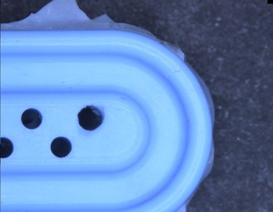

Flash is usually due to material escaping from the mold. Flash is usually due to one of the reasons listed below. Follow the troublshooting steps listed for your particular type of flash

1. Reduce shot size and hold pressure - Parts will reduce in size, check for IMM runability
2. Reduce Tip Temperatures/Back Pressure
3. Reduce Injection Speed - This may increase cycle-time
4. Reduce Plasticising revolutions
1. Foreign matter between the mold halves - Clean the mold faces
2. Not enough clamping force - Reclamp mold/Increase clamp force
3. Possible damaged mold - venting can get eroded by the fumes. Have both halves checked under the microscope (Toolroom)
4. Mold faces not aligned - Re-align B-side mold face
5. Mold clamp imbalance - Tie bar stretch/broken tie-bar??
1. Check for wear in the ejector pins
2. Decrease injection speed
3. Flash still present - change B-side plates/mold